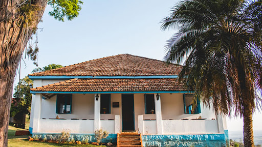

<!DOCTYPE html>
<html lang="pt-br">
</html>
<title>Fazenda São João</title>
    <meta charset="UTF-8">
    <meta http-equiv="X-UA-Compatible" content="IE=egde">
    <meta name="viewport" content="width=device-width, initial-scale=1.0 ">
    <link rel="stylesheet" href="index.css">
 </head>

<body>
    <header>
        <div class="center">
          </img>
        </div>
        <h1>Fazenda São João</h1>
      </header>
<main>
<section>
<p>
    A Fazenda São João, localizada em Ribeirão Claro, Paraná, possui uma rica história que reflete o desenvolvimento agrícola e cultural da região. Fundada no início do século XX, a fazenda desempenhou um papel significativo na economia local, especialmente no cultivo de café, que era a principal atividade agrícola da época.

A fazenda foi estabelecida por imigrantes italianos que se estabeleceram na região em busca de novas oportunidades. Esses pioneiros trouxeram consigo técnicas agrícolas avançadas e um forte senso de comunidade, que contribuíram para o sucesso da fazenda e para o desenvolvimento de Ribeirão Claro como um todo.

Ao longo dos anos, a Fazenda São João cresceu e diversificou suas atividades. Além do café, começou a cultivar outras culturas como cana-de-açúcar e milho, e também investiu na criação de gado. A fazenda se tornou um exemplo de gestão agrícola eficiente, combinando tradição e inovação para manter sua produtividade e sustentabilidade.

A propriedade é notável não apenas por sua contribuição econômica, mas também por seu valor histórico e cultural. A arquitetura colonial da sede da fazenda e das construções ao seu redor preserva a memória dos primeiros colonizadores e reflete o estilo de vida rural da época. A Fazenda São João é um testemunho vivo da história de Ribeirão Claro, representando a evolução da agricultura e da sociedade local ao longo das décadas.

Hoje, a Fazenda São João continua a ser uma referência em agricultura na região. Além de suas atividades produtivas, a fazenda abriu suas portas para o turismo rural, permitindo que visitantes conheçam sua história, suas práticas agrícolas e apreciem suas paisagens naturais. O turismo na Fazenda São João promove a valorização do patrimônio histórico e cultural, bem como a importância da agricultura sustentável.

A história da Fazenda São João é marcada pela determinação e pelo trabalho árduo de seus fundadores e sucessores, que transformaram a propriedade em um símbolo de prosperidade e tradição em Ribeirão Claro. Ela continua a ser um orgulho para a comunidade local, representando o legado de seus antepassados e a contínua busca por desenvolvimento e inovação na agricultura.
</p>
</section>
</main>


</body>